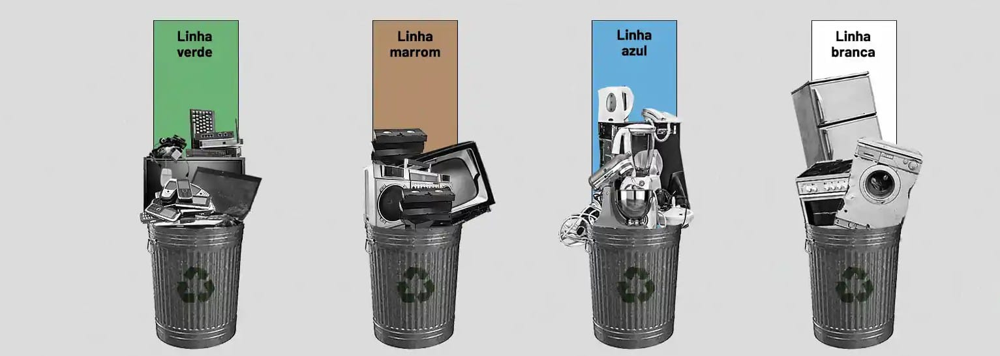
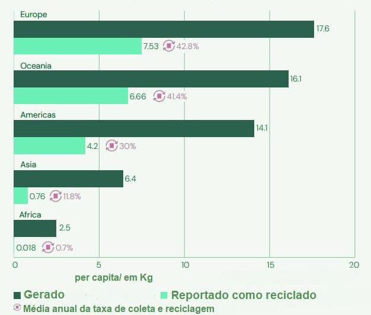

Lixo Eletrônico (E-lixo)
O Que é?
O Lixo Eletrônico, também chamado de E-lixo, é formado por aparelhos quebrados, inutilizados ou obsoletos, como celulares, computadores, televisores e baterias. Esse tipo de resíduo cresce em ritmo acelerado, já que a tecnologia avança rapidamente e muitos dispositivos são descartados antes mesmo de atingirem sua vida útil completa. O problema é que grande parte desses materiais contém metais pesados e substâncias tóxicas, que podem contaminar o solo, a água e prejudicar a saúde humana. Por isso, entender a importância da destinação correta do E-lixo é fundamental para reduzir impactos ambientais e promover um consumo mais responsável.
Conheça os 4 Tipos de Lixo Eletrônico:
Verde:
Equipamentos grandes, como geladeiras e fogões. Contêm metais que podem poluir o solo se descartados incorretamente.
Marrom:
Componentes degradáveis ou restos orgânicos de eletrônicos. Precisam de tratamento especial.
Azul:
Papéis, embalagens e manuais de produtos eletrônicos. Devem ser reciclados separadamente.
Branco:
Vidros de monitores antigos e telas de LCD. Podem ser reciclados de forma segura.
Volume de Lixo Eletrônico Gerado e Coletado:
📊 Dados Sobre o Gráfico:
- ✔ Em 2022, foram geradas 62 milhões de toneladas de lixo eletrônico.
- ✔ Crescimento de 82% em relação a 2010.
- ✔ O lixo eletrônico cresce 5 vezes mais rápido que a reciclagem.
- ✔ Apenas 25% é reciclado corretamente.
- ✔ O Brasil está entre os maiores produtores e menores recicladores.
Fonte: Monitor Global do L5ixo Eletrônico 2024 (ONU), via Inovação Tecnológica
Perguntas Frequentes (FAQ)
Notícias